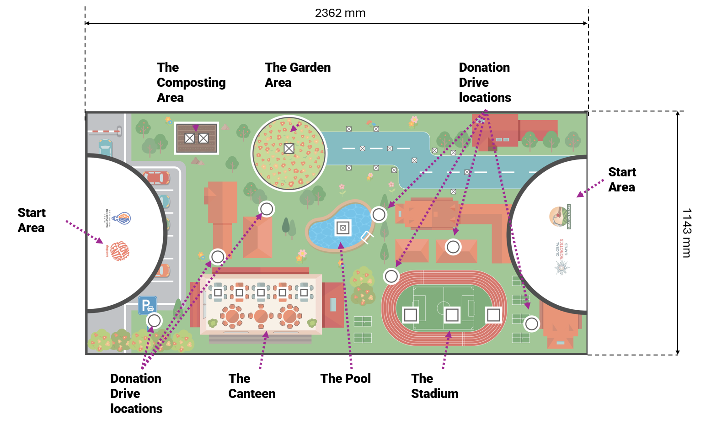
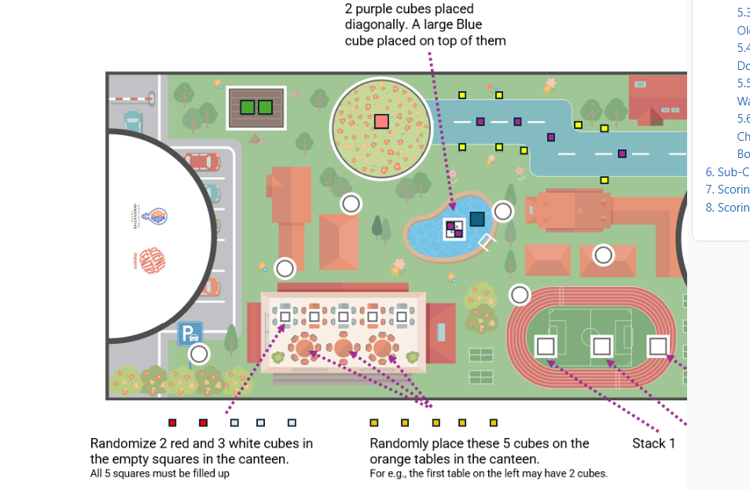
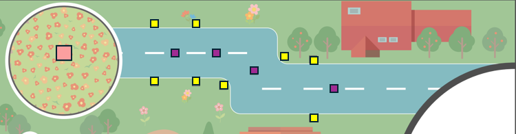
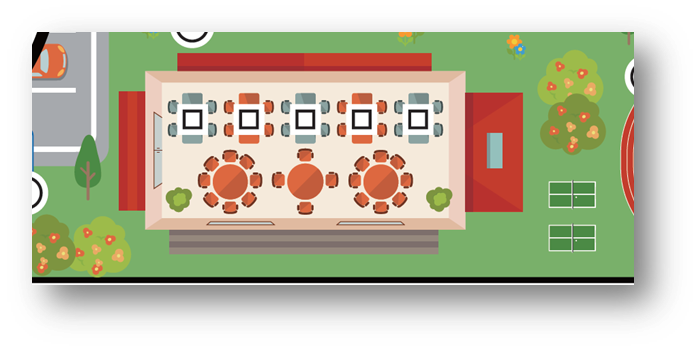
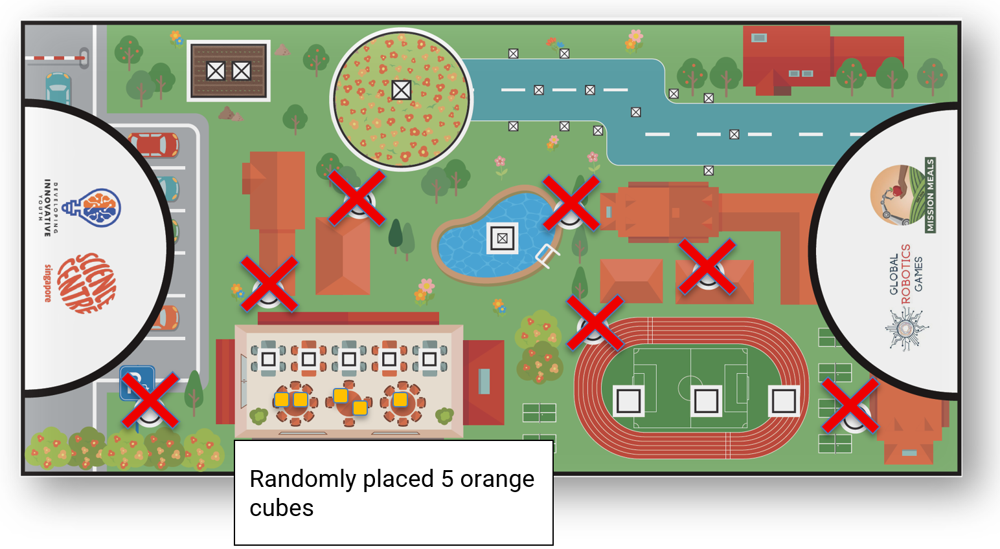
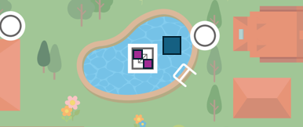

MR1: 任務餐點 (Mission Meals) 完整中文規則
重要此中文規則完全基於官方最新釋出的 PDF 進行精準翻譯與校對。
1. 簡介 (Introduction)
歡迎來到零飢餓挑戰！(Welcome to the Zero Hunger Challenge!)
什麼是聯合國永續發展目標 #2：零飢餓 (UN SDG #2: Zero Hunger)？ 想像一下，如果你明天醒來沒有早餐吃。你的肚子在第一堂課上咕嚕咕嚕叫。世界上許多孩子每天都有這樣的感覺。現在，想像一個世界上每個人每天都有足夠的健康食物可以吃的世界。這就是聯合國永續發展目標 #2：零飢餓的目標。
世界是一個相當大的地方，而現在它正努力養活所有人。2024 年，聯合國發現世界上大約每 12 人中就有 1 人——也就是近 7 億多人——面臨飢餓。更令人擔憂的是，有 23 億人（將近地球上每 3 人中就有 1 人）無法確定他們的下一頓健康餐點在哪裡。
當我們把目光轉向兒童，這些數字顯示了為什麼我們需要你的幫助。大約有 1.48 億兒童因為沒有攝取足夠的營養，而比他們應有的體型更小或更虛弱。為了解決這個問題，我們需要建立「永續糧食系統 (Sustainable Food Systems)」，這其實就是指我們在種植、分享和食用食物的方式上，需要更聰明、更友善。
為什麼我們要從學校開始？ 改變從我們生活和學習的地方開始！我們的比賽在一個學校的地圖上進行。透過觀察我們的食堂、花園和教室，我們可以發現如何在家鄉對抗飢餓。當我們學會在學校管理食物時，我們就學會了如何拯救世界！
您的機器人任務 (Your Robot’s Mission) 今年，您的團隊將組裝並編寫一個機器人程式，成為「任務餐點 (Mission Meals)」的英雄。您的任務基於實現零飢餓所需的現實世界步驟：
- 在地農業/食物里程 (Local Farming / Food Miles)：縮短食物的運輸距離以保持新鮮並節省燃料。
- 減少浪費/食堂廚餘 (Waste Reduction / Lunchroom Leftovers)：利用科技對食物進行分類，確保好食物不被浪費。
- 生命循環/堆肥尖兵 (The Circle of Life / Compost Crusaders)：將舊的廚餘變成「棕色黃金 (堆肥)」來種植新植物。
- 社區關懷/分享就是關懷 (Community Kindness / Sharing is Caring)：確保多餘的食物能送到最需要的人手中。
- 智慧資源/為植物澆水 (Smart Resources / Water for Our Plants)：利用機器人保護我們最珍貴的資源：水。
- 品質控制/健康零食偵探 (Quality Control / Healthy Snack Detectives)：確保每一份零食都是安全、健康且隨時可以食用的！
成為改變世界的人！(Become a Changemaker!) 我們希望您在製作機器人時能像探險家一樣思考。問問您的隊友：我們的食堂食物從哪裡來？我們如何幫助學校減少水資源浪費？機器人如何讓分享變得更容易？您今天寫的程式碼和組裝的機器人，都是邁向一個無人挨餓的世界的第一步！
2. 閱讀挑戰文件指南 (Guide to reading the Challenge Doc)
以下是一份指南，您可以依照它來了解機器人比賽文件的組織方式：
- 閱讀簡介 (Read the Introduction)：了解世界上的飢餓問題以及您能如何幫助解決它。
- 瀏覽比賽場地 (Glance through the Game Field)：這是您的機器人運行的場地，它顯示了任務的配置。您會在場地的左右兩側發現兩個半圓形，它們被稱為「起跑區 (Start Areas)」，就像是您的家。
- 了解任務 (Understand the missions)：深入任務細節並對應場地。有些任務是固定的，而有些任務有可以移動的道具。重要的是，了解每個任務的分數並仔細學習如何獲得分數。
- 閱讀規則 (Read the Rules for the dos and don’ts)：了解您必須遵守哪些規則以避免被取消資格 (從比賽中被移除)。
3. 比賽場地 (Game Field)
您的校園 (Your school compound)
比賽在一個代表校園的大型地墊上進行。地墊被劃分為不同的區域，看起來就像您的學校：
- 🟢 起跑區 (Start Areas)：這些是您的機器人開始其旅程的地方，也是您在比賽期間可以安全觸碰機器的區域。
- 🟢 花園 (The Garden)：粉色和紫色方塊「生長」的地方。
- 🟢 食堂 (The Canteen)：一個繁忙的區域，在這裡進行零食和食物的分類與分享。
- 🟢 水池與堆肥區 (The Pool & Compost Areas)：分別用於水資源和將舊食物回收成土壤的專屬區域。
- 🟢 體育場 (The Stadium)：在這裡必須滿足飲食需求，以提供體育活動所需的能量。
符號與標記 (Symbols and Markings) 請密切注意印在地墊上的形狀：
- 空心正方形 (Empty Squares)：這些確切顯示了比賽開始時方塊應該放置的位置。
- 空心圓形 (Empty Circles)：這些是「目標區 (Target Zones)」。如果您將資源送到圓圈內，您將獲得分數！

3.1 起跑區 (Start Area)
起跑區是每支隊伍開始機器人運行的起點。 在起跑區會發生的事：
- ✅ 您的機器人在每次運行前都會接受檢查 (參考 6.1: 賽前準備)。
- ✅ 比賽期間，您允許觸碰您的機器人與機器人設備。
- ✅ 如果機器人不需要，您可以將機器人設備與零件留在此處。
- ✅ 您可以在此存放大型或小型方塊 (除非任務規則另有規定)。
禁止觸碰規則 (No-Touch Rule)：如果機器人、機器人設備或方塊完全或部分超出了起跑區的黑線邊界，隊伍則不允許觸碰它們。 罰則 (Penalty)：如果您不小心觸碰了任何部分或完全超出起跑區黑線邊界的方塊，裁判將永久將該方塊移出比賽。
4. 遊戲物件與起始位置 (Game Objects & Positioning)
比賽開始前，兩種尺寸與各種顏色的方塊會散佈在場地上。起始位置可能會以帶有黑色邊框的正方形或圓形標記。
以下是一份圖解指南，幫助您了解方塊的起始位置：

任務方塊指定表 (Mission Cube Designations)
您可以參考下表來確認每個任務指定使用的方塊與顏色：
| 任務名稱 | 大方塊 (Large Cubes 50mm) | 小方塊 (Small Cubes 25mm) |
|---|---|---|
| 5.1 食物里程 | 1 個粉色 (Pink) | 4 個紫色 (Purple) |
| 5.2 食堂廚餘 | — | 3 個白色 (White), 2 個紅色 (Red) |
| 5.3 堆肥尖兵 | 2 個綠色 (Green) | (使用 5.2 的 2 個紅色方塊) |
| 5.4 分享就是關懷 | — | 5 個橘色 (Orange) |
| 5.5 為植物澆水 | 1 個藍色 (Blue) | 2 個紫色 (Purple) |
| 5.6 健康零食偵探 | 堆疊1: 1 個黃色 (Yellow) 堆疊2: 2 個白色 (White) 堆疊3: 1 個黃色, 1 個藍色 |
堆疊1: 1 個白色 (White) 堆疊2: — 堆疊3: 1 個白色 (White) |
| 5.1 安全加分項 | 8 個黃色 (Yellow) (障礙物) | — |
5. 機器人任務與計分 (Robot Missions and Scoring)
5.1 食物里程任務與校園花園小幫手 (Food Miles Mission and School Garden Helpers)
任務說明： 這個任務是關於找出我們的食物從哪裡來。為了解決飢餓問題，我們希望食物從農場到餐盤的運輸距離能盡量縮短。運輸時間越短意味著食物越新鮮、對我們越好，且透過減少燃料使用來保護環境。這有助於使糧食系統永續發展。
任務要求：
- 機器人必須沿著灰藍色的路徑 (greyish-blue path) 行駛，並至少經過兩個轉彎。
- 在花園區有一個大型粉色方塊。
- 大型粉色方塊在比賽期間任何時候都不能離開花園區 (Garden area)。
- 灰藍色路徑上隨機放置了四個小型紫色方塊。
- 機器人必須將這四個小型紫色方塊與大型粉色方塊連接 (connect)。

計分與安全限制：
- 計分限制：任何沒有觸碰到大型粉色方塊表面（無論是直接觸碰，或透過其他相連方塊間接觸碰）的小型紫色方塊，都不算連接，因此不予計分。小型紫色方塊的平坦表面如果沒有連接到大型粉色方塊的平坦表面（直接或間接），將不予計分。
- 計分限制：粉色方塊只能觸碰小型紫色方塊。在比賽結束時，粉色方塊不應該觸碰任何其他顏色的方塊。
- 安全/犯規限制：機器人必須小心避免觸碰黃色方塊。如果黃色方塊觸碰到任何紫色方塊，那些紫色方塊將不會獲得任何分數。
5.2 食堂廚餘：減少食物浪費 (Lunchroom Leftovers: Wasting Less Food)
任務說明： 這個任務教導我們停止浪費食物。機器人可以協助分類哪些食物仍可食用，哪些應該進行堆肥（將舊食物變成新土壤）。透過準確地識別和分類食物，我們確保只有腐壞的食物被丟棄，幫助每個人都有足夠的食物吃。
任務要求：
- 食堂區有五個小型方塊 (三個白色和兩個紅色)。
- 機器人需要準確識別出兩個紅色方塊（代表「廚餘 leftovers」）。
- 機器人必須將這些紅色方塊送入堆肥區 (composting area)。
- 機器人必須將三個白色方塊 (代表適合食用的食物) 留在食堂區。

- 罰則：如果在比賽結束時，任何白色方塊沒有在其起始位置被發現，隊伍將被扣除缺點分數。
5.3 堆肥尖兵：將舊食物變成新土壤 (Compost Crusaders: Turning Old Food into New Soil)
任務說明： 堆肥幫助我們將廚餘變成種植新食物的肥沃土壤，這稱為資源的永續利用。我們不丟棄舊食物，而是利用機器人將其堆肥成養分。這節省了垃圾掩埋場的空間，並製造出更好的土壤，對於年復一年種植健康農作物以對抗飢餓非常重要。
任務要求：
- 必須將兩個小型紅色方塊 (從「食堂廚餘」任務中收集而來) 完全送達到堆肥區。
- 堆肥區已經存在兩個大型綠色方塊。
- 機器人必須移動這兩個大型綠色方塊並將它們帶到任何一個起跑區 (Start Area)。
- 計分限制：如果在堆肥區內沒有紅色方塊，隊伍將無法在任務 5.3 中獲得分數。
5.4 分享就是關懷：食物捐贈活動 (Sharing is Caring: Food Donation Drive)
任務說明： 這個任務是關於幫助那些沒有足夠食物的人。機器人可以幫助收集多餘的食物，並將其送到需要的地方。透過組織這場食物捐贈活動，我們幫助實現糧食安全，並確保無人挨餓。
任務要求：
- 在食堂區的桌子上隨機放置了五個小型橘色方塊。
- 機器人必須收集這五個方塊。
- 收集到的方塊必須被送到散佈在比賽場地上的七個目標圓圈中的任何一個。
- 傳播善意 - 您運送的每個方塊都有助於餵養一個飢餓的人！

5.5 為我們的植物澆水：節約用水 (Water for Our Plants: Saving Water where we can)
任務說明： 水是種植食物的寶貴資源。這個任務專注於使用智慧系統來節約用水。機器人的工作是透過移除可能弄髒或污染水源的其他元素，來保護保存下來的水資源 (藍色方塊)。
任務要求：
- 水池區 (pool area) 設置了一個堆疊，由一個大型藍色方塊立於兩個小型紫色方塊之上。
- 機器人必須將這兩個小型紫色方塊從大型藍色方塊下方移除。
- 在計分完成時，這兩個小型紫色方塊必須在水池區之外。
- 機器人必須將大型藍色方塊留在水池區內的任何地方。
- 關鍵限制 1 (Critical Constraint 1)：大型藍色方塊不能進入任何一個起跑區。
- 關鍵限制 2 (Critical Constraint 2)：隊伍不能使用任何其他方塊來協助機器人完成此任務。

5.6 健康零食偵探：選擇對身體有益的食物 (Healthy Snack Detectives: Choosing Good Food for our Bodies)
任務說明： 為了對抗飢餓，我們也必須促進良好的營養。這個任務是關於使用機器人與感測器來檢查食物 (堆疊) 的品質。透過小心移動食物堆疊而不改變它們，機器人就像個偵探，確保送到我們盤子裡的食物是新鮮且健康的。
任務要求：
- 場地上有三個預先建好的方塊堆疊：
- 第一個堆疊：1 個小型白色方塊疊在 1 個大型黃色方塊上。
- 第二個堆疊：1 個大型白色方塊疊在 1 個大型白色方塊上。
- 第三個堆疊：底部是 1 個大型黃色方塊，中間是 1 個小型白色方塊，頂部是 1 個大型藍色方塊。
- 機器人必須將這三個堆疊原封不動地運送到起跑區 (Start Area)。
- 裁判會監督，隊伍只能在方塊完全進入起跑區後才能觸碰它們。
- 如果堆疊在起跑區外被破壞，或是被分開送回起跑區，它們不能被重新組合來獲得分數。
- 關鍵限制 (Critical Constraint)：在從體育場 (stadium) 運送到任何起跑區的過程中，堆疊不能以任何方式被改變。不能添加、移除或重新排列任何方塊。
6. 比賽規則 (Sub-Category Game Rules)
如果在機器人運行期間有任何不確定性，將由裁判做出最終決定。如果在沒有明確決定的情況下，裁判應做出有利於隊伍的決定。 規則分為四個部分：賽前準備 (Pre-Run)、運行期間 (During the Run) 以及賽後 (Post-Run)。
6.1 賽前準備 (Getting Ready: Pre-Run Rules)
在 2 分鐘的比賽開始前，我們需要確保您的機器人與設備已準備就緒！這稱為賽前檢查。
- 📏 尺寸檢查 (The Robot Box)：您的主機器人及其所有附屬零件 (機器人設備) 必須能完全放入一個 250mm x 250mm x 250mm 的虛擬盒子中。裁判會在運行前檢查這個尺寸。
- 📌 起始位置 (Starting Position)：通過尺寸檢查後，您的機器人及其所有設備必須放置在任何一個起跑區 (Start Area) 內。通過尺寸檢查後直到比賽開始前，您不能對機器人進行任何修改。
- 🚫 嚴禁使用磁鐵 (Magnets are strictly not allowed)：機器人的任何部位（包含機器人本體、擴充設備、機械結構或裝飾性零件）嚴格禁止使用磁鐵。發現帶有磁鐵的機器人將被取消該回合的資格。
- 🚫 禁止隱藏零件 (No Secret Parts)：不允許您將任何機器人零件或配件藏在手中或比賽場地外以備後用。您計劃使用的所有東西都必須一開始就在場地上。
- 🧱 僅限 LEGO® (LEGO® Only)：裁判將確保您只使用官方的 LEGO® 積木與零件。
6.2 比賽即將開始 (The Match is About to Begin)
- 當裁判發出開始信號時，計時開始。裁判會發出指令：「G. R. G. Go!」(或類似的指令)。
- 比賽時間長度 (Match Duration)：每場機器人比賽最長為 2:00 分鐘 (120 秒)。120 秒後，裁判將不會採計機器人獲得的任何分數。
6.3 什麼可以做，什麼不能做 (What You Can and Can't Do)
在比賽期間，當您的機器人在場地上時，大多數時間您不能觸碰它！但是，當它回到起跑區時，您可以讓機器人停下來並觸碰它。
如果您的機器人在起跑區「完全停止」，您被允許 (You ARE ALLOWED To)：
- 觸碰您的機器人：您可以小心地觸碰並將機器人移動到起跑區內的新位置。
- 切換程式：您可以為機器人的下一次運行選擇不同的程式。
- 管理零件：您可以徒手從機器人上移除或新增配件 (機器人設備) 和遊戲物件 (任務道具)。
- 準備運行：完成裝卸零件後，您可以將機器人移到適當位置，開始下一次運行。
- 徒手連接方塊：您允許手動將磁性方塊連接在一起。
在比賽的「任何時候」，您都「不被允許」(You ARE NOT ALLOWED To)：
- 觸碰移動中的機器人：當您的機器人在比賽場地上移動時，您不能觸碰它。裁判會停止比賽並記錄分數。
- 觸碰起跑區外的道具：如果機器人設備或道具即使只是部分超出了起跑區的黑線邊界，您也不能修理或觸碰它們。
- 即使機器人停在起跑區內，這項規則依然適用。
- 即使是機器人不小心將道具推出起跑區，這項規則也適用。
6.4 比賽結束與計分 (How the Match Ends and Scoring)
比賽何時停止 (When the Match Stops)： 機器人嘗試將在以下情況結束：
- 時間到 (Time Runs Out)：2 分鐘 (120 秒) 計時器歸零。
- 離開桌面 (Off the Table)：您的機器人完全駛離比賽桌面。
- 違反規則 (Breaking Rules)：您的機器人或團隊違反規則或任何規定。
- 喊「停止」(Shout "STOP")：隊員大喊「停止 (STOP)」，且機器人完全停止移動。
- 如果在您喊「停止」後機器人仍在移動，則嘗試直到機器人自行停止或被隊伍停止後才會結束。
確認分數 (Finalising the Score)：
- 計分過程 (Scoring Process)：機器人運行結束後，裁判將對該次嘗試進行計分。
- 簽名確認 (Sign-Off)：隊伍必須在計分表（紙本或數位）上簽名以同意分數。一旦簽名，就無法再更改。
- 爭議 (Disputes)：如果隊伍在合理時間後拒絕簽名，裁判可以取消該隊伍在該回合的資格。
- 教練與證明 (Coach and Proof)：教練不允許加入與裁判關於計分的討論。影片或照片證明將不被接受。
- 空白分數時間 (Empty Score Time)：如果隊伍完成運行但沒有獲得任何正分，該次運行的時間將自動設為 120 秒。
- 排名 (Ranking)：如果隊伍總分相同，他們的最終排名將由該次嘗試記錄的時間來決定。
7. 計分表 (Scoring)
使用下表來追蹤您的分數，並了解每項任務的最高得分。
| 任務 (Mission) | 單項得分 | 最高得分 (Max) |
|---|---|---|
| 5.1 食物里程任務 | ||
| 紫色方塊連接至粉色方塊 (Purple cubes connected to pink cube) | 3 分 / 每個 | 12 |
| 「乾淨」的黃色方塊 (未觸碰到任何東西) | 1 分 / 每個 | 8 |
| 5.2 食堂廚餘 | ||
| 紅色方塊送到堆肥區 (Red cubes delivered to Composting Area) | 5 分 / 每個 | 10 |
| 白色方塊被移出其起始位置 | -5 分 / 每個 | -15 |
| 5.3 堆肥尖兵 | ||
| 綠色方塊送到起跑區 (需要 2 個紅色方塊在堆肥區內) | 15 分 / 每個 | 30 |
| 5.4 分享就是關懷 | ||
| 橘色方塊放置在 7 個目標圓圈中的任何一個 | 9 分 / 每個 | 45 |
| 5.5 為植物澆水 | ||
| 兩個小型紫色方塊不再位於水池區 | 10 分 / 每個 | 20 |
| 藍色方塊留在水池區內 | 25 分 | 25 |
| 5.6 健康零食偵探 | ||
| 堆疊 1 送到起跑區 | 10 分 | 10 |
| 堆疊 2 送到起跑區 | 15 分 | 15 |
| 堆疊 3 送到起跑區 | 25 分 | 25 |
| 總可能得分 (Total Possible Points) | 200 |
8. 計分說明 (Scoring Interpretation)
此部分官方將於近期上傳 (This section will be uploaded soon)